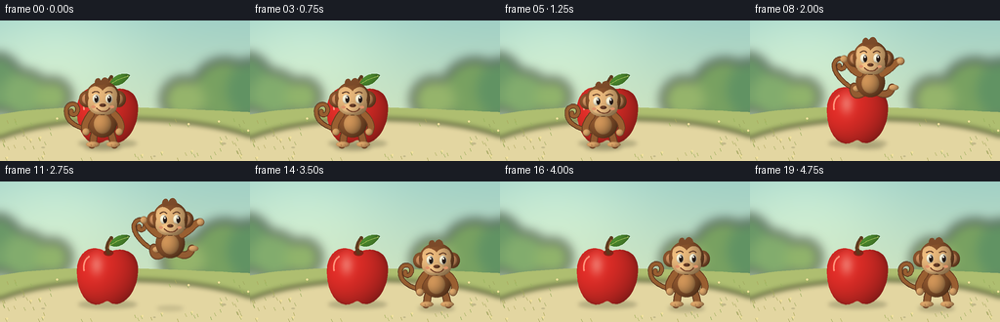
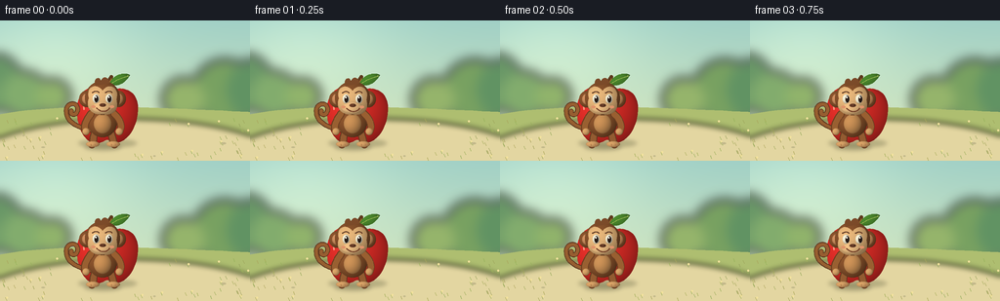

CODING AGENTS AS PIXEL WORLD MODELS
traex/GPT-6.1-Sol · dynamic_spatial_relationship_0060
点击播放 · 原生 RGB 像素
逐轮保存的候选
回放视频、检查图与代码变化。
每份候选均可单独播放。实际图片检查记录在下方工具轨迹中。
候选 01播放与检查图
点击播放 · 原生 RGB 像素


展开代码变化
--- 上一保存版本
+++ 本次保存版本
@@ -0,0 +1,204 @@
+from pathlib import Path
+import math
+import numpy as np
+from PIL import Image, ImageDraw, ImageFilter
+import artifact_io
+
+ROOT=Path(__file__).resolve().parent
+W,H,S=256,144,3
+
+def bezier(points, n=30):
+ p=np.array(points,float)
+ t=np.linspace(0,1,n)[:,None]
+ return ((1-t)**3*p[0]+3*(1-t)**2*t*p[1]+3*(1-t)*t*t*p[2]+t**3*p[3]).tolist()
+
+def path_segments(segments):
+ out=[]
+ for points in segments: out += bezier(points)
+ return out
+
+def poly(im, points, fill):
+ ImageDraw.Draw(im).polygon([(round(x*S),round(y*S)) for x,y in points],fill=fill)
+
+def stroke(im, pts, color, width):
+ d=ImageDraw.Draw(im)
+ xy=[(round(x*S),round(y*S)) for x,y in pts]
+ d.line(xy,fill=color,width=round(width*S),joint='curve')
+ r=width*S/2
+ for x,y in [xy[0],xy[-1]]: d.ellipse((x-r,y-r,x+r,y+r), fill=color)
+
+def shaded(im, box, color, points=None, depth=.24, gloss=0):
+ x0,y0,x1,y1=box
+ a,b,c,d=[round(v*S) for v in box]
+ if c<=a or d<=b: return
+ yy,xx=np.mgrid[b:d,a:c]
+ nx=(xx/S-(x0+x1)/2)/((x1-x0)/2)
+ ny=(yy/S-(y0+y1)/2)/((y1-y0)/2)
+ z=np.sqrt(np.maximum(0,1-nx*nx-ny*ny))
+ light=np.clip(.68+.25*z-.17*nx-.13*ny,.40,1.15)
+ arr=np.array(color)[None,None,:]*light[:,:,None]
+ if gloss:
+ shine=np.exp(-((nx+.36)**2/.045+(ny+.40)**2/.11))*gloss
+ arr=arr*(1-shine[:,:,None])+np.array([255,242,222])*shine[:,:,None]
+ arr=np.clip(arr,0,255).astype('uint8')
+ patch=Image.fromarray(arr)
+ mask=Image.new('L',(c-a,d-b),0)
+ md=ImageDraw.Draw(mask)
+ if points is None: md.ellipse((0,0,c-a-1,d-b-1),fill=255)
+ else: md.polygon([((x-x0)*S,(y-y0)*S) for x,y in points],fill=255)
+ im.paste(patch,(a,b),mask)
+
+def ellipse(im, box, color):
+ ImageDraw.Draw(im).ellipse(tuple(round(v*S) for v in box), fill=color)
+
+def shadow(im, x,y,rx,ry,opacity=60):
+ layer=Image.new('RGBA',im.size,(0,0,0,0))
+ d=ImageDraw.Draw(layer)
+ d.ellipse(((x-rx)*S,(y-ry)*S,(x+rx)*S,(y+ry)*S),fill=(50,57,31,opacity))
+ layer=layer.filter(ImageFilter.GaussianBlur(2.0*S))
+ im.alpha_composite(layer)
+
+def background():
+ yy,xx=np.mgrid[:H*S,:W*S]
+ t=np.clip(yy/(H*S),0,1)
+ a=np.array([161,208,198]); b=np.array([220,233,188])
+ arr=a[None,None,:]*(1-t[:,:,None])+b[None,None,:]*t[:,:,None]
+ glow=np.exp(-(((xx/S-56)/95)**2+((yy/S-30)/60)**2))
+ arr+=glow[:,:,None]*np.array([27,21,14])
+ im=Image.fromarray(np.uint8(np.clip(arr,0,255))).convert('RGBA')
+ distant=Image.new('RGBA',im.size)
+ for x,y,r,col in [(-7,64,30,(105,151,103,255)),(25,76,24,(130,172,109,255)),(54,78,18,(144,179,107,255)),(230,73,33,(120,161,97,255)),(264,71,32,(97,147,99,255)),(188,81,22,(149,180,107,255))]:
+ ellipse(distant,(x-r,y-r,x+r,y+r),col)
+ distant=distant.filter(ImageFilter.GaussianBlur(6*S)); im.alpha_composite(distant)
+ ground=Image.new('RGBA',im.size)
+ pts=bezier([(-5,97),(70,82),(185,91),(262,94)])+[(262,150),(-5,150)]
+ poly(ground,pts,(174,190,112,255)); im.alpha_composite(ground)
+ # Broad sunlit clearing makes the spatial relationship easy to see.
+ clearing=Image.new('RGBA',im.size)
+ ellipse(clearing,(-30,101,291,194),(227,214,161,255))
+ clearing=clearing.filter(ImageFilter.GaussianBlur(3*S));im.alpha_composite(clearing)
+ rng=np.random.default_rng(23)
+ d=ImageDraw.Draw(im)
+ for _ in range(125):
+ x=rng.uniform(0,256); y=rng.uniform(103,144)
+ if 54<x<225 and 109<y<135: continue
+ color=(146+int(rng.integers(0,30)),160+int(rng.integers(0,22)),92,130)
+ stroke(im,[(x,y),(x-1.2,y-2.7)],color,.55)
+ if rng.random()<.25: ellipse(im,(x-1,y-4,x+1,y-2),(243,226,157,255))
+ # Delicate ground pebbles.
+ for x,y,r in [(44,130,2),(229,126,2.5),(158,139,1.4),(24,118,1.3)]:
+ ellipse(im,(x-r,y-r*.4,x+r,y+r*.4),(194,184,138,255))
+ return im
+
+BG=background()
+
+def apple(im):
+ shadow(im,110,126,30,4.2,65)
+ pts=path_segments([
+ [(110,73),(90,60),(77,77),(79,96)],
+ [(79,96),(80,116),(92,132),(106,124)],
+ [(106,124),(111,121),(111,123),(115,125)],
+ [(115,125),(128,129),(141,110),(141,93)],
+ [(141,93),(143,73),(127,65),(110,73)]])
+ shaded(im,(78,67,143,128),(228,46,40),pts,gloss=.31)
+ # Root of stem, a woody curved stem, and an emerald leaf.
+ ellipse(im,(106,70,116,76),(130,36,24,255))
+ stem=bezier([(111,73),(108,67),(111,62),(114,58)])
+ stroke(im,stem,(94,57,29,255),3.9)
+ stroke(im,[(111,68),(112,63),(114,60)],(155,101,51,255),1.15)
+ leaf=path_segments([[(112,65),(117,53),(130,54),(133,56)],[(133,56),(128,65),(120,69),(112,65)]])
+ shaded(im,(111,53,134,69),(76,139,46),leaf)
+ stroke(im,bezier([(113,65),(120,60),(127,58),(131,57)]),(166,191,88,255),.7)
+ # Small pearly highlight and low-key dimple.
+ stroke(im,bezier([(91,77),(86,80),(85,86),(86,91)]),(255,148,123,255),1.6)
+
+
+def monkey(im,x,feet,jump=0,crouch=0,look=0,settle=0):
+ # Local coordinates: feet at y=0, head roughly 50px above.
+ def P(p): return (x+p[0],feet+p[1]+crouch*max(0,-p[1])/60)
+ def box(b):
+ p=P(b[:2]); q=P(b[2:]); return (*p,*q)
+ def E(b,col): shaded(im,box(b),col)
+ def L(pts,col,w): stroke(im,[P(p) for p in pts],col,w)
+ brown=(139,84,45); dark=(94,53,30); gold=(221,166,105)
+ # Long, curled prehensile tail, visible to the left throughout the leap.
+ tail=path_segments([
+ [(-10,-17),(-26,-20),(-36,-26-jump*10),(-37,-35-jump*7)],
+ [(-37,-35-jump*7),(-39,-48-jump*5),(-23,-47-jump*7),(-26,-37-jump*7)],
+ [(-26,-37-jump*7),(-28,-31-jump*7),(-34,-34-jump*7),(-32,-37-jump*7)]])
+ L(tail,(91,53,31,255),5.0); L(tail,(151,94,48,255),3.4)
+ # Far limbs, then torso.
+ if jump>0:
+ lleg=bezier([(-7,-15),(-14,-10),(-19,-13),(-17,-21)])
+ rleg=bezier([(6,-16),(17,-10),(21,-16),(22,-20)])
+ armL=bezier([(-11,-34),(-20,-37),(-24,-48),(-27,-49)])
+ armR=bezier([(12,-34),(22,-39),(26,-48),(31,-47)])
+ lf=(-18,-22,-10,-16); rf=(19,-23,29,-17)
+ else:
+ lleg=bezier([(-7,-17),(-11,-10),(-9,-5),(-11,-3)])
+ rleg=bezier([(7,-17),(11,-10),(10,-5),(12,-3)])
+ armL=bezier([(-12,-34),(-18,-27),(-20,-20),(-17,-16)])
+ armR=bezier([(12,-34),(19,-28),(20,-20),(17,-16)])
+ lf=(-17,-6,-3,0);rf=(4,-6,18,0)
+ for limb in [lleg,rleg]: L(limb,(100,58,32,255),8);L(limb,(146,91,49,255),6)
+ E(lf,gold);E(rf,gold)
+ E((-15,-41,15,-10),brown)
+ E((-9,-34,9,-14),(207,148,88))
+ for limb in [armL,armR]: L(limb,(107,62,33,255),7.8);L(limb,(153,95,49,255),5.9)
+ for arm in [armL,armR]:
+ cx,cy=arm[-1];E((cx-3.7,cy-3.6,cx+3.7,cy+3.6),gold)
+ # Characteristic protruding ears.
+ E((-24,-58,-9,-41),brown);E((9,-58,24,-41),brown)
+ E((-21,-55,-12,-44),(207,143,94)); E((12,-55,21,-44),(207,143,94))
+ E((-18,-68,18,-33),brown)
+ # Three soft fur spikes on the crown.
+ tuft=path_segments([[(-7,-63),(-11,-70),(-3,-74),(-2,-68)],[(-2,-68),(1,-74),(6,-72),(7,-66)]])
+ poly(im,[P(p) for p in tuft],(123,74,41,255))
+ # Heart-shaped pale facial mask with two eye lobes and broad muzzle.
+ face=path_segments([
+ [(-14,-50),(-17,-66),(-4,-64),(0,-58)],
+ [(0,-58),(7,-67),(18,-61),(14,-49)],
+ [(14,-49),(18,-36),(8,-32),(0,-34)],
+ [(0,-34),(-9,-32),(-18,-39),(-14,-50)]])
+ bb=box((-18,-65,18,-32))
+ shaded(im,bb,(237,187,125),[P(p) for p in face])
+ # Subtle brows, white eyeballs and gaze toward the destination.
+ gaze=look*1.3
+ for cx in [-6.7,6.7]:
+ L(bezier([(cx-3.6,-56),(cx-1,-58),(cx+1,-58),(cx+3,-56)]),(97,60,38,255),.9)
+ E((cx-3.6,-54.7,cx+3.6,-45),(253,246,218))
+ E((cx-1.7+gaze,-53,cx+2.3+gaze,-46.0),(43,30,25))
+ ellipse(im,box((cx-.9+gaze,-52.3,cx+.4+gaze,-50.7)),(255,255,244,255))
+ E((-11,-46.4,11,-34.5),(244,196,135))
+ E((-3.3,-45,3.5,-41.2),(119,70,44))
+ for cx in [-1.1,1.4]:ellipse(im,box((cx-.5,-43.9,cx+.5,-43.1)),(64,38,28,255))
+ smile=bezier([(-6,-40),(-2,-35.8),(4,-35.8),(7,-40)])
+ L(smile,(109,58,36,255),.9)
+ ellipse(im,box((-11.6,-43,-7.4,-40.3)),(224,146,105,255))
+ ellipse(im,box((7.4,-43,11.6,-40.3)),(224,146,105,255))
+ # Toe detail at rest.
+ if jump==0:
+ for xx in [-12,-8,9,13]:L([(xx,-3),(xx+.1,-.8)],(173,118,73,255),.5)
+
+frames=[]
+for i in range(20):
+ im=BG.copy()
+ apple(im)
+ # Hold, anticipate, leap in a smooth parabola, then remain on the right.
+ if i<=4:
+ x=105; feet=130; j=0;c=math.sin(i*.55)*.5;look=0 if i<3 else .7
+ elif i<=6:
+ x=105+(i-4)*.7;feet=130;j=0;c=(i-4)*3;look=1
+ elif i<=13:
+ u=(i-6)/7
+ x=106.4+84.6*(u*u*(3-2*u))
+ feet=130-53*math.sin(math.pi*u)
+ j=math.sin(math.pi*u);c=0;look=1
+ if i==13:j=0;c=4
+ else:
+ x=191;feet=128.7;j=0;c=2*math.exp(-(i-14)) if i<16 else .25*math.sin(i);look=.5
+ height=130-feet
+ shadow(im,x,130,19-height*.13,3.6-height*.026,round(62-height*.52))
+ monkey(im,x,feet,j,c,look)
+ frames.append(np.asarray(im.convert('RGB').resize((W,H),Image.Resampling.LANCZOS),dtype=np.uint8))
+artifact_io.save(np.stack(frames),ROOT)
可观测工具轨迹
实际执行的命令与返回图片。
命令 1exit 0
/bin/bash -lc 'ls -la && cat prompt.txt && cat GENERATION_RULES.md && cat task_spec.json'
命令 2exit 0
/bin/bash -lc 'cat artifact_io.py'
命令 3exit 0
/bin/bash -lc "cat > generate.py <<'PY'
from pathlib import Path
import math
import numpy as np
from PIL import Image, ImageDraw, ImageFilter
import artifact_io
ROOT=Path(__file__).resolve().parent
W,H,S=256,144,3
def bezier(points, n=30):
p=np.array(points,float)
t=np.linspace(0,1,n)[:,None]
return ((1-t)**3*p[0]+3*(1-t)**2*t*p[1]+3*(1-t)*t*t*p[2]+t**3*p[3]).tolist()
def path_segments(segments):
out=[]
for points in segments: out += bezier(points)
return out
def poly(im, points, fill):
ImageDraw.Draw(im).polygon([(round(x*S),round(y*S)) for x,y in points],fill=fill)
def stroke(im, pts, color, width):
d=ImageDraw.Draw(im)
xy=[(round(x*S),round(y*S)) for x,y in pts]
d.line(xy,fill=color,width=round(width*S),joint='curve')
r=width*S/2
for x,y in [xy[0],xy[-1]]: d.ellipse((x-r,y-r,x+r,y+r), fill=color)
def shaded(im, box, color, points=None, depth=.24, gloss=0):
x0,y0,x1,y1=box
a,b,c,d=[round(v*S) for v in box]
if c<=a or d<=b: return
yy,xx=np.mgrid[b:d,a:c]
nx=(xx/S-(x0+x1)/2)/((x1-x0)/2)
ny=(yy/S-(y0+y1)/2)/((y1-y0)/2)
z=np.sqrt(np.maximum(0,1-nx*nx-ny*ny))
light=np.clip(.68+.25*z-.17*nx-.13*ny,.40,1.15)
arr=np.array(color)[None,None,:]*light[:,:,None]
if gloss:
shine=np.exp(-((nx+.36)**2/.045+(ny+.40)**2/.11))*gloss
arr=arr*(1-shine[:,:,None])+np.array([255,242,222])*shine[:,:,None]
arr=np.clip(arr,0,255).astype('uint8')
patch=Image.fromarray(arr)
mask=Image.new('L',(c-a,d-b),0)
md=ImageDraw.Draw(mask)
if points is None: md.ellipse((0,0,c-a-1,d-b-1),fill=255)
else: md.polygon([((x-x0)*S,(y-y0)*S) for x,y in points],fill=255)
im.paste(patch,(a,b),mask)
def ellipse(im, box, color):
ImageDraw.Draw(im).ellipse(tuple(round(v*S) for v in box), fill=color)
def shadow(im, x,y,rx,ry,opacity=60):
layer=Image.new('RGBA',im.size,(0,0,0,0))
d=ImageDraw.Draw(layer)
d.ellipse(((x-rx)*S,(y-ry)*S,(x+rx)*S,(y+ry)*S),fill=(50,57,31,opacity))
layer=layer.filter(ImageFilter.GaussianBlur(2.0*S))
im.alpha_composite(layer)
def background():
yy,xx=np.mgrid[:H*S,:W*S]
t=np.clip(yy/(H*S),0,1)
a=np.array([161,208,198]); b=np.array([220,233,188])
arr=a[None,None,:]*(1-t[:,:,None])+b[None,None,:]*t[:,:,None]
glow=np.exp(-(((xx/S-56)/95)**2+((yy/S-30)/60)**2))
arr+=glow[:,:,None]*np.array([27,21,14])
im=Image.fromarray(np.uint8(np.clip(arr,0,255))).convert('RGBA')
distant=Image.new('RGBA',im.size)
for x,y,r,col in [(-7,64,30,(105,151,103,255)),(25,76,24,(130,172,109,255)),(54,78,18,(144,179,107,255)),(230,73,33,(120,161,97,255)),(264,71,32,(97,147,99,255)),(188,81,22,(149,180,107,255))]:
ellipse(distant,(x-r,y-r,x+r,y+r),col)
distant=distant.filter(ImageFilter.GaussianBlur(6*S)); im.alpha_composite(distant)
ground=Image.new('RGBA',im.size)
pts=bezier([(-5,97),(70,82),(185,91),(262,94)])+[(262,150),(-5,150)]
poly(ground,pts,(174,190,112,255)); im.alpha_composite(ground)
# Broad sunlit clearing makes the spatial relationship easy to see.
clearing=Image.new('RGBA',im.size)
ellipse(clearing,(-30,101,291,194),(227,214,161,255))
clearing=clearing.filter(ImageFilter.GaussianBlur(3*S));im.alpha_composite(clearing)
rng=np.random.default_rng(23)
d=ImageDraw.Draw(im)
for _ in range(125):
x=rng.uniform(0,256); y=rng.uniform(103,144)
if 54<x<225 and 109<y<135: continue
color=(146+int(rng.integers(0,30)),160+int(rng.integers(0,22)),92,130)
stroke(im,[(x,y),(x-1.2,y-2.7)],color,.55)
if rng.random()<.25: ellipse(im,(x-1,y-4,x+1,y-2),(243,226,157,255))
# Delicate ground pebbles.
for x,y,r in [(44,130,2),(229,126,2.5),(158,139,1.4),(24,118,1.3)]:
ellipse(im,(x-r,y-r*.4,x+r,y+r*.4),(194,184,138,255))
return im
BG=background()
def apple(im):
shadow(im,110,126,30,4.2,65)
pts=path_segments([
[(110,73),(90,60),(77,77),(79,96)],
[(79,96),(80,116),(92,132),(106,124)],
[(106,124),(111,121),(111,123),(115,125)],
[(115,125),(128,129),(141,110),(141,93)],
[(141,93),(143,73),(127,65),(110,73)]])
shaded(im,(78,67,143,128),(228,46,40),pts,gloss=.31)
# Root of stem, a woody curved stem, and an emerald leaf.
ellipse(im,(106,70,116,76),(130,36,24,255))
stem=bezier([(111,73),(108,67),(111,62),(114,58)])
stroke(im,stem,(94,57,29,255),3.9)
stroke(im,[(111,68),(112,63),(114,60)],(155,101,51,255),1.15)
leaf=path_segments([[(112,65),(117,53),(130,54),(133,56)],[(133,56),(128,65),(120,69),(112,65)]])
shaded(im,(111,53,134,69),(76,139,46),leaf)
stroke(im,bezier([(113,65),(120,60),(127,58),(131,57)]),(166,191,88,255),.7)
# Small pearly highlight and low-key dimple.
stroke(im,bezier([(91,77),(86,80),(85,86),(86,91)]),(255,148,123,255),1.6)
def monkey(im,x,feet,jump=0,crouch=0,look=0,settle=0):
# Local coordinates: feet at y=0, head roughly 50px above.
def P(p): return (x+p[0],feet+p[1]+crouch*max(0,-p[1])/60)
def box(b):
p=P(b[:2]); q=P(b[2:]); return (*p,*q)
def E(b,col): shaded(im,box(b),col)
def L(pts,col,w): stroke(im,[P(p) for p in pts],col,w)
brown=(139,84,45); dark=(94,53,30); gold=(221,166,105)
# Long, curled prehensile tail, visible to the left throughout the leap.
tail=path_segments([
[(-10,-17),(-26,-20),(-36,-26-jump*10),(-37,-35-jump*7)],
[(-37,-35-jump*7),(-39,-48-jump*5),(-23,-47-jump*7),(-26,-37-jump*7)],
[(-26,-37-jump*7),(-28,-31-jump*7),(-34,-34-jump*7),(-32,-37-jump*7)]])
L(tail,(91,53,31,255),5.0); L(tail,(151,94,48,255),3.4)
# Far limbs, then torso.
if jump>0:
lleg=bezier([(-7,-15),(-14,-10),(-19,-13),(-17,-21)])
rleg=bezier([(6,-16),(17,-10),(21,-16),(22,-20)])
armL=bezier([(-11,-34),(-20,-37),(-24,-48),(-27,-49)])
armR=bezier([(12,-34),(22,-39),(26,-48),(31,-47)])
lf=(-18,-22,-10,-16); rf=(19,-23,29,-17)
else:
lleg=bezier([(-7,-17),(-11,-10),(-9,-5),(-11,-3)])
rleg=bezier([(7,-17),(11,-10),(10,-5),(12,-3)])
armL=bezier([(-12,-34),(-18,-27),(-20,-20),(-17,-16)])
armR=bezier([(12,-34),(19,-28),(20,-20),(17,-16)])
lf=(-17,-6,-3,0);rf=(4,-6,18,0)
for limb in [lleg,rleg]: L(limb,(100,58,32,255),8);L(limb,(146,91,49,255),6)
E(lf,gold);E(rf,gold)
E((-15,-41,15,-10),brown)
E((-9,-34,9,-14),(207,148,88))
for limb in [armL,armR]: L(limb,(107,62,33,255),7.8);L(limb,(153,95,49,255),5.9)
for arm in [armL,armR]:
cx,cy=arm[-1];E((cx-3.7,cy-3.6,cx+3.7,cy+3.6),gold)
# Characteristic protruding ears.
E((-24,-58,-9,-41),brown);E((9,-58,24,-41),brown)
E((-21,-55,-12,-44),(207,143,94)); E((12,-55,21,-44),(207,143,94))
E((-18,-68,18,-33),brown)
# Three soft fur spikes on the crown.
tuft=path_segments([[(-7,-63),(-11,-70),(-3,-74),(-2,-68)],[(-2,-68),(1,-74),(6,-72),(7,-66)]])
poly(im,[P(p) for p in tuft],(123,74,41,255))
# Heart-shaped pale facial mask with two eye lobes and broad muzzle.
face=path_segments([
[(-14,-50),(-17,-66),(-4,-64),(0,-58)],
[(0,-58),(7,-67),(18,-61),(14,-49)],
[(14,-49),(18,-36),(8,-32),(0,-34)],
[(0,-34),(-9,-32),(-18,-39),(-14,-50)]])
bb=box((-18,-65,18,-32))
shaded(im,bb,(237,187,125),[P(p) for p in face])
# Subtle brows, white eyeballs and gaze toward the destination.
gaze=look*1.3
for cx in [-6.7,6.7]:
L(bezier([(cx-3.6,-56),(cx-1,-58),(cx+1,-58),(cx+3,-56)]),(97,60,38,255),.9)
E((cx-3.6,-54.7,cx+3.6,-45),(253,246,218))
E((cx-1.7+gaze,-53,cx+2.3+gaze,-46.0),(43,30,25))
ellipse(im,box((cx-.9+gaze,-52.3,cx+.4+gaze,-50.7)),(255,255,244,255))
E((-11,-46.4,11,-34.5),(244,196,135))
E((-3.3,-45,3.5,-41.2),(119,70,44))
for cx in [-1.1,1.4]:ellipse(im,box((cx-.5,-43.9,cx+.5,-43.1)),(64,38,28,255))
smile=bezier([(-6,-40),(-2,-35.8),(4,-35.8),(7,-40)])
L(smile,(109,58,36,255),.9)
ellipse(im,box((-11.6,-43,-7.4,-40.3)),(224,146,105,255))
ellipse(im,box((7.4,-43,11.6,-40.3)),(224,146,105,255))
# Toe detail at rest.
if jump==0:
for xx in [-12,-8,9,13]:L([(xx,-3),(xx+.1,-.8)],(173,118,73,255),.5)
frames=[]
for i in range(20):
im=BG.copy()
apple(im)
# Hold, anticipate, leap in a smooth parabola, then remain on the right.
if i<=4:
x=105; feet=130; j=0;c=math.sin(i*.55)*.5;look=0 if i<3 else .7
elif i<=6:
x=105+(i-4)*.7;feet=130;j=0;c=(i-4)*3;look=1
elif i<=13:
u=(i-6)/7
x=106.4+84.6*(u*u*(3-2*u))
feet=130-53*math.sin(math.pi*u)
j=math.sin(math.pi*u);c=0;look=1
if i==13:j=0;c=4
else:
x=191;feet=128.7;j=0;c=2*math.exp(-(i-14)) if i<16 else .25*math.sin(i);look=.5
height=130-feet
shadow(im,x,130,19-height*.13,3.6-height*.026,round(62-height*.52))
monkey(im,x,feet,j,c,look)
frames.append(np.asarray(im.convert('RGB').resize((W,H),Image.Resampling.LANCZOS),dtype=np.uint8))
artifact_io.save(np.stack(frames),ROOT)
PY
python generate.py"视觉工具实际返回图片 1

保存候选 1 份；完成命令 3 次；可验证图片返回 1 张。原始 API 响应与完整日志保留在本地。